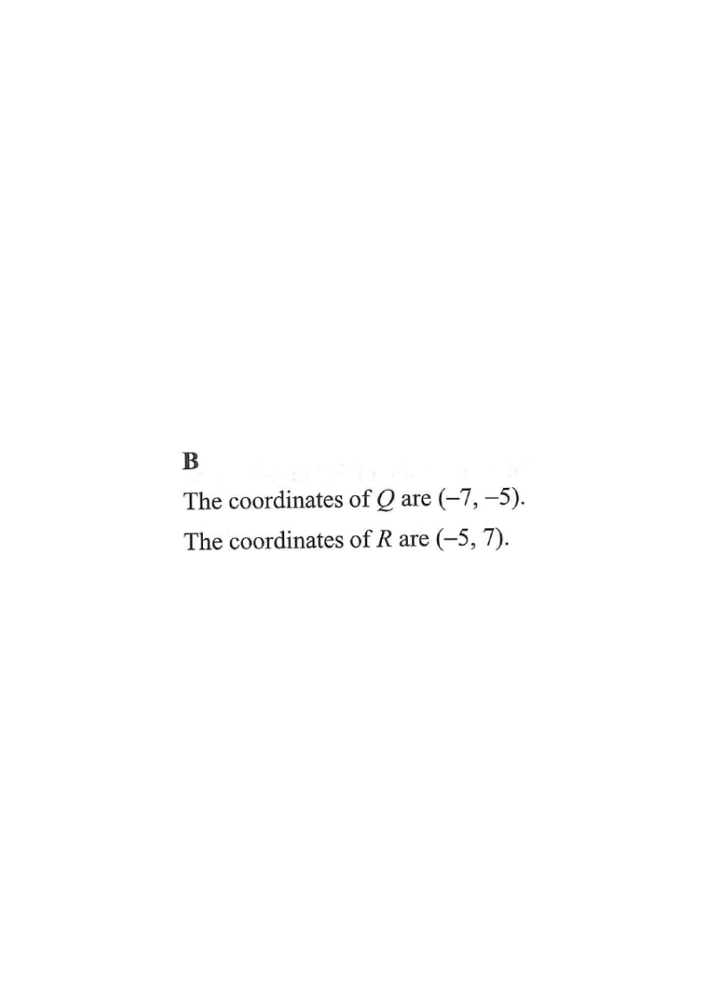

The coordinates of the point $P$ are $(7, -5)$. $P$ is reflected with respect to the $y$-axis to the point $Q$. $Q$ is then rotated clockwise about the origin through $90^\circ$ to the point $R$. Find the $x$-coordinate of $R$.

Question. The point \(P(6,-2)\) is reflected over the \(y\)-axis to the point \(Q\), and then \(Q\) is rotated clockwise through \(90^{\circ}\) about the origin to the point \(R\). Find the \(x\)-coordinate of \(R\).